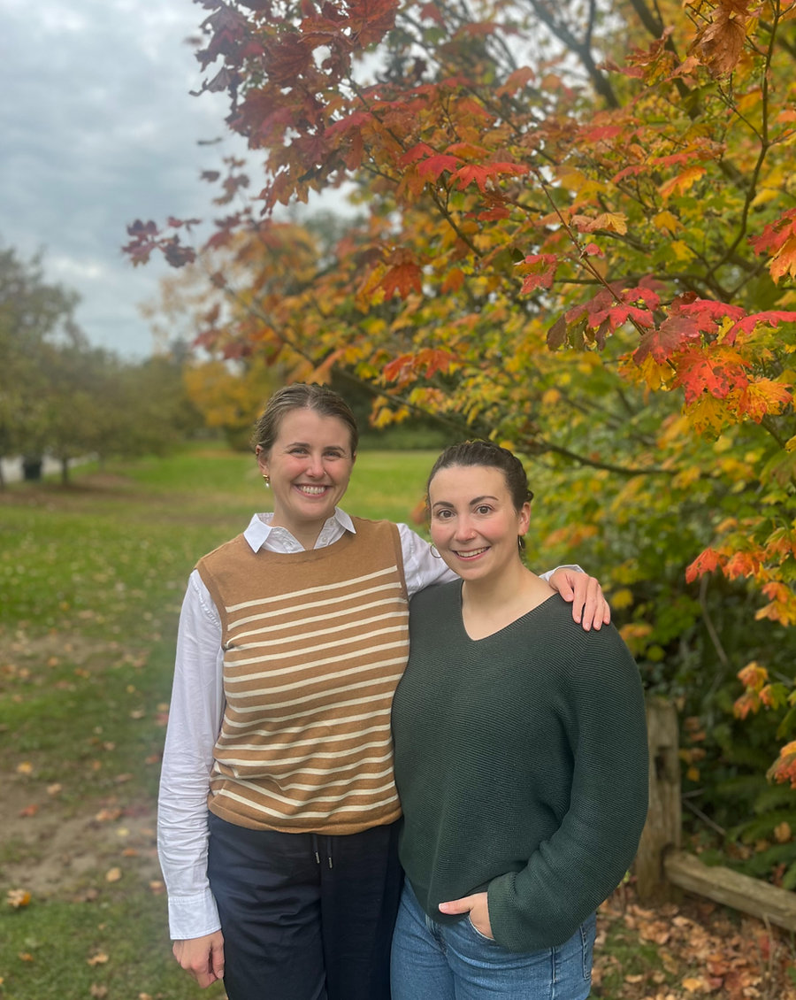

If you're here, you might be ready for a change. Constantly worrying about food, exercise, or feeling disconnected from your body can be mentally and emotionally draining.
If you are looking to:
- Recover from an eating disorder, disordered eating, or quit the dieting cycle
- Improve your relationship with your body
- Explore an intuitive eating approach
- Feel confident moving your body in a way that balances health, well being, and joy
- Deepen your understanding of nutrition from an evidence-based lens so you can feel at peace with all foods
- Manage a chronic health condition with a weight-inclusive approach
We hear you and we want to help.

We're Nicole Cramer and Dani Ladyka, the two registered dietitians of Woven Nutrition.
About UsWhat Our Clients Say
Let's Work Together
In a world that otherwise teaches you to not trust your body, we can help you find:
Connection
Reconnect with your body's innate wisdom and internal cues
Acceptance
Explore body image issues and move toward a place of body neutrality, acceptance, and respect
Balance
Identify ways to practice intuitive movement that honors your body's needs and supports your movement-related goals
Nourishment
Move beyond dieting and create a more peaceful and flexible relationship with food
Schedule a FREE introductory call with Woven Nutrition!
Contact us